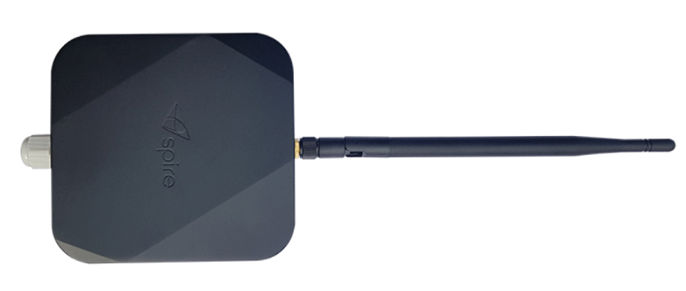
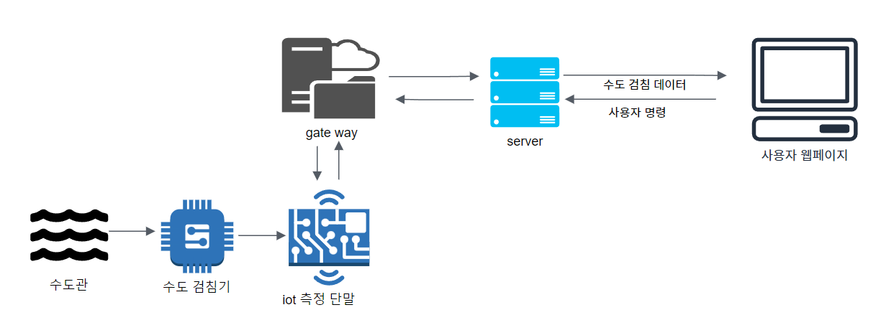

안양시 수도 검침기
1. 제품 이미지

2. 주요 기능
안양시 원격 수도 검침기는 1시간에 한 번씩 정해진 데이터를 수집하여 서버로 전송.
검침 주기는 변경이 가능하고, 누수 동파도 측정 가능
3. 아키텍처 다이어그램

4. 나의 역할
- 검침 데이터 저장 기능 개발
→ 단말은 소비 전력을 줄이기 위해 데이터 검침을 1시간에 한 번 하고, 6시간에 한 번 저장한 데이터를 서버에 전송
- 구현 검침 데이터 재가공
5. 결과 및 효과
- 수도 검침원이 검침이 어려운 지역에 단말을 설치하여 정확하고 편리한 시스템 제공